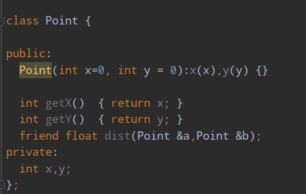
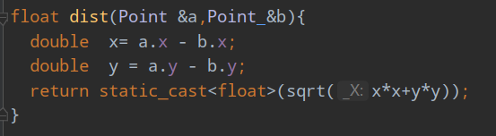
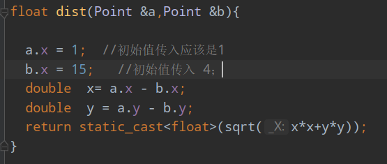
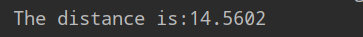
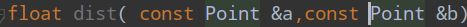
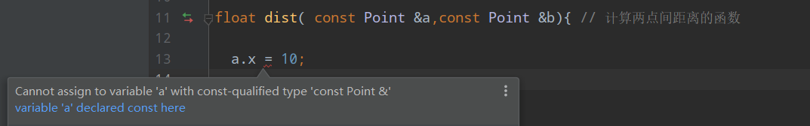

1.概述
①友元：是定义一个类是，该主动声明哪些其他类或函数是它的朋友，进而给他们定向提供对类的访问特权。
②友元是C++提供的一种破坏数据封装和数据隐藏的机制。
③通过友元将一个模块声明为另一个模块的友元，一个模块能够引用到另一个模块中本是被隐藏的信息。
④可以使用友元函数和友元类。
建议：为了确保数据完整性，及数据封装与隐藏原则，建议尽量不使用或少使用。
2、友元函数
①友元函数是在类的声明中由关键字friend修饰说明的非成员函数，在它的函数体中能通过对象名访问 private和protected 成员。
②作用：增加灵活性，使程序员可以在封装和快速性方面做合理选择。
③访问对象中的成员必须通过对象名。
④友元是单向的。
友元函数的定义方法（以定义一个Point类为例）

（该函数传入引用，节约工耗）

此时，就会遇到在函数中改变对象私有信息的危险，破坏数据的封装。
例如：

输出：
对比原先的输出：
如果想防止对象的私有数据被更改 , 可以在传入引用时 加 const修饰 例如：
这样 在函数中再想更改对象的私有数据时就会报错，例如：

至于const的用法 相信大家都见过了，在后面的博客中会加以补充。